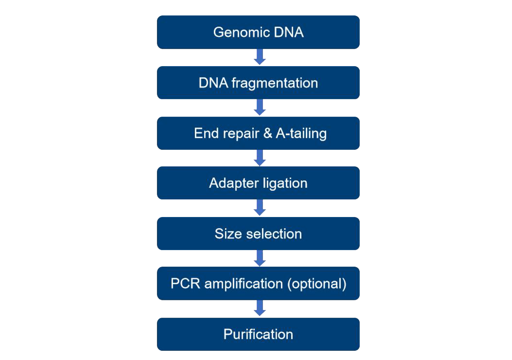
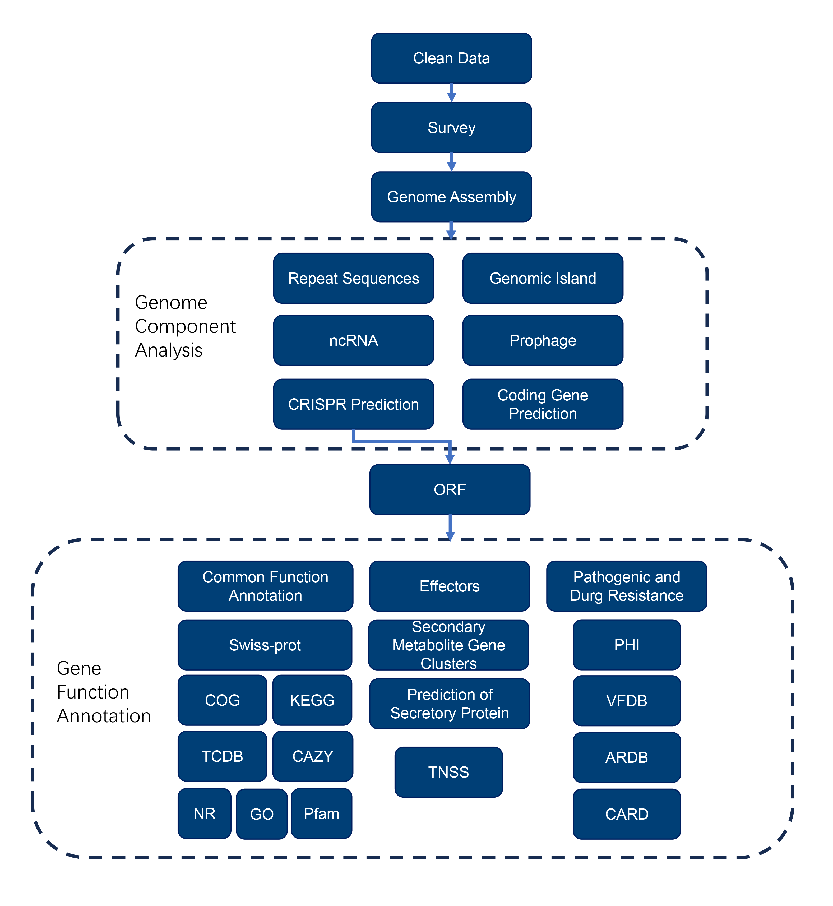

Novogene microbial genome analysis report
| Contract ID | XXXXXXXXXXXXX |
| Demo | XXXXXXXXXXXXX |
| Batch ID | XXXXXXXXXXXXX |
| Report time | 2023-11-3 |
| Reminder | Partial results are presented in this report, while full results will be delivered in data re
lease. Hyperlink of results in this report will be only valid in data release, after statement confirmation. If th ere are any doubts regarding the presentation of the final report's results or the file's location, please review the ReadMe.html file. |
1 Summary of workflow
1.1 Introduction
Prokaryotes are the earliest forms of life, appearing on earth 4 billion years ago. The Prokaryotes include the Archaea, which include inhabitants of some of the most extreme environments on the planet, and the Bacteria, which include both important pathogens and producers of fermented food, antibiotics, and vitamins. Ongoing technological advances in genome sequencing are allowing bacterial genomes to be sequenced at ever-lower cost, which generally provides at the draft genome map. A draft genome may be composed of a set of a few or several contigs or scaffolds.

Figure 1-1 Project workflow
1.2 Library Construction and Sequencing
1.2.1 Sample Quality Control
Please refer to Novogene’s sample QC report.
1.2.2 Library Construction, Quality Control and Sequencing
The genomic DNA was randomly sheared into short fragments. The obtained fragments were end repaired. A-tailed and further ligated with Illumina adapter. The resulting fragments with adapters were size selected, PCR amplified unless otherwise specified as PCR-free, before proceeding for purification. Following is the workflow of library construction:

Figure 1-2 Library construction workflow
The library was quantified through Qubit and qPCR, and size distribution detected with fragment analyzer. Quantified libraries were pooled and sequenced on Illumina platforms according to the effective library concentration and required data amount.
1.3 Bioinformatics analysis pipeline

Figure 1-2 Pipeline of Bioinformatics Analysis
Analysis procedure：
1 Raw data filtering: low quality reads were removed and remained high-quality reads, which were clean data;
2 Genome assembly: perform genome assembly to obtain fasta and evaluate the assembly result;
3 Genome component analysis: analyze and predict the component of the genome, including coding gene, non-coding gene, replicate sequence, prophage, gene island, CRISPR, and so on
4 Function annotation: utilize various databases to perform functional annotation for coding sequence, including KEGG, COG and databases that aim to pathogenic microorganism.
2 Analysis result
2.1 Summary of data
Raw data filtering: raw data obtained from sequencing exist low quality reads, in order to guarantee the reliability of further analysis, fastp (Chen et al.,2018) was utilized to filter raw data to remove low quality data. Remaining data was called clean data and be used for subsequent analysis.
Parameters of fastp:
--in1 input_1.fq.gz, --out1 out_1.fq.gz, --in2 input_2.fq.gz, --out2 out_2.fq.gz, -g, -q 5, -u 50, -n 15, -l 150, --min_trim_length 10, --overlap_diff_limit 1, --overlap_diff_percent_limit 10, -j output.json, -h output.html
Specific procedure：
1) When the N content in any sequencing read exceeds 10% of the base number of the read, the paired reads are removed;
2) When the number of low-quality (Q<=5) bases in any sequencing read exceeds 50% of the base number of the reads, the paired reads are removed;
3) When any sequencing read contains adapter sequences, remove the paired reads;
4) Remove the PolyG tail.
Quality control result was shown below：
Table 2-1 Statistics for data quality control
| SampleID | RawData(M) | RawReads(#) | CleanData(M) | CleanReads(#) | Clean_Q20(%) | Clean_Q30(%) | Clean_GC(%) | Effective(%) |
|---|---|---|---|---|---|---|---|---|
| sample1 | 1,004.29 | 6,695,296 | 1,002.76 | 6,685,072 | 97.11 | 91.98 | 35.00 | 99.84 |
Show Annotation:
Sample: sample name
Insert size: Length of insert fragment
RawData: Rawdata size(Mbp)
RawReads: Rawdata reads number
CleanData: Cleandata size(Mbp)
CleanReads: Cleandata reads number
Clean_Q20: Q20 value of clean data
Clean_Q30: Q30 value of clean data
Clean_GC: GC content of clean data
Effective: Ratio of clean data to raw data
Distribution of base content and quality of clean data is shown below：
Figure 2-1-1 A/T/G/C Distribution
Figure 2-1-2 Error Rate Distribution
Show Annotation
Distribution of base content: X-coordinate is the base location along reads. Y-coordinate is the base content.
Distribution of base quality: X-coordinate is the base location along reads. Y-coordinate is the average of the erro rate along the reads.
Result Directory: result/01.QC/ & 00.CleanData
2.2 Summary of genome
2.2.1 Genome survey
Before assembly, we estimate genome size of every sample by K-mer analysis. 15 Kmer size is selected. The genome size estimated of samples is shown in table below. The kmer distribution diagram is shown in the figure below.
K-mer analysis statistics
| Sample ID | K-mer | K-mer Number | K-mer Depth | Genome Size(Mb) | Revised Size(Mb) | Heterozygous Rate(%) | Repeat Rate(%) |
|---|---|---|---|---|---|---|---|
| sample1 | 15 | 167,630,901 | 81.24 | 2.06 | 2.00 | 0.49 | 25.06 |
Show Annotation
K-mer number: all Kmer numbers that are extracted from reads
K-mer depth: average Kmer depth
Genome size: genome size estimated
Revised size: corrected genome size
Heterozygous Rate: Heterozygous rate of the estimated genome
Repeat Rate: Repeat rate of the estimated genome

Figure 2-2 15-mers distributions
Show Annotation
X-coordinate is Kmer depth. Y-coordinate is the frequency of each Kmer depth. The red curve is the statistics of sequencing reads. The black curve is the standard Poisson distribution.
2.2.2 Assembly Results
After obtaining clean data, genome assembly was perfomed to obtain fasta and the assembly results were evaluated.
Assembly step:
1）Obtained clean data after pre-treatment. Manipulate SOAP denovo(version 2.04)(Li R et al.,2010; Li R et al.,2008), SPAdes(Bankevich A et al.,2012), ABySS(Simpson JT et al.,2009) software for assembly and finally use CISA(Lin S H et al.,2013) was finally used for integration;
2）Utilized gapclose（Version: 1.12）or other software for otpimization and fill gap the assembly assembly to obtain the final result;
3）Filtrated fragments whose length were shorter than 500bp, and decontaminated for any contamination before proceeding for data evaluation and statistical analysis;
Statistic result:
Table 2-3-1 Statistics of scaffolds
| Sample_name | Total Num(>500bp) | Total Length(bp) | N50 Length(bp) | N90 Length(bp) | Max Length(bp) | Min Length(bp) | Sequence GC% |
|---|---|---|---|---|---|---|---|
| sample1 | 14 | 2,106,519 | 589,498 | 86,174 | 898,301 | 4,076 | 34.9 |
Table 2-3-2 Statistics of contigs
| Sample_name | Total Num(>500bp) | Total Length(bp) | N50 Length(bp) | N90 Length(bp) | Max Length(bp) | Min Length(bp) | Sequence GC% |
|---|---|---|---|---|---|---|---|
| sample1 | 14 | 2,106,519 | 589,498 | 86,174 | 898,301 | 4,076 | 34.9 |
Show Annotation
Table 2-3-1 is the statistic of scaffold longer than 500 bp，Table 2-3-2 is the statistic of contig got by breaking scaffold (>=500 bp) from the second column with N
Figure 2-3 GC content vs sequencing depth
Show Annotation
The X-coordinate is GC content, and Y-coordinate is average depth. The right site is the sequence depth distribution. The upper site is the distribution of GC content.
Sequencing depth and GC content analysis can reflect whether any contaminating sequences and plasmids exist within the sample. They also help us realize the repeated sequence situation in target strain
Result Directory：result/02.Assembly/
2.3 Genome component analysis
Microbial genomes contain abundant functional regions which are involved in various mechanisms such as transcription regulation, translation regulation, epigenetic regualtions, etc. These functional regions can also determine the species diversity as well. The composition of the target genome is obtained by predicting coding genes, repetitive sequences, non-coding RNAs, etc, through various methods.
2.3.1 Coding gene
Use GeneMarkS(Version 4.17)(Besemer J et al.,2001)(http://topaz.gatech.edu/GeneMark/) for coding gene prediction of new sequencing genome. Prediction result was shown as follow:
Table 2-4 Statistical Table of Protein-Coding Gene Prediction Results
| Sample ID | Genome size(bp) | Gene number(#) | Gene total length(bp) | Gene average length(bp) | Gene length/Genome(%) |
|---|---|---|---|---|---|
| sample1 | 2,106,519 | 2,137 | 1,886,142 | 883 | 89.54 |
Show Annotation
Genome size: the total length of the whole genome
Gene number: the number of predicted protein-coding genes
Gene total length: the total length of all protein-coding genes
Gene average length: the average length of protein-coding genes
Gene length/Genome: the proportion of the total length of protein-coding regions to the entire genome
The gene length distribution graph is shown below:
Figure 2-4 Gene length Distribution of Each Sample
Show Annotation
X-coordinate represents gene length, Y-coordinate represents the corresponding gene count.
Result Directory: result/03.Genome_Component/*/Gene/
2.3.2 Repeat sequence
Repeated sequences, components in gene regulation network, are segments that have similar or complementary sequences but originate from different positions on the genome. Repeated sequences can be classified into interspersed repeats (IR) and tandem repeats (TR) according to its genome distribution.
Interspersed repeats can be further subdivided into short-interspersed nuclear elements (SINEs) and longinterspersed nuclear elements (LINEs), both of which showcase transposition activity. Tandem repeats are specific sequences have two or more adjacent repeats, and can be subdivided into minisatellite DNA or microsatellite DNA. Tandem repeats showcase specific species composition and can be used as genetic species characterization for evolution relationship studies.
Perform RepeatMasker(Version open-4.0.5)(Saha S et al.,2008) for ST prediction and TRF(Tandem Repeats Finder, Version 4.07b)(Benson G et al.,1999) for TF searching. The result are shown as below:
Table 2-5 Statistic of Interspersed repeats
| Sample ID | Type | Number(#) | Total Length(bp) | In Genome(%) | Average length(bp) |
|---|---|---|---|---|---|
| sample1 | LTR | 73 | 5,179 | 0.2459 | 72 |
| sample1 | DNA | 30 | 1,866 | 0.0886 | 62 |
| sample1 | LINE | 25 | 1,519 | 0.0721 | 61 |
| sample1 | SINE | 7 | 459 | 0.0218 | 66 |
| sample1 | RC | 2 | 103 | 0.0049 | 52 |
| sample1 | Unknown | 0 | 0 | 0 | 0 |
| sample1 | Total | 137 | 8,901 | 0.4225 | 67 |
Show Annotation
Type: the type of repeats
Number: the number of repeats
Total Length: the length of repeats accounting for the genome
In Genome: the proportion of the length of repeats accounting for the genome
the average length of repeats
LTR: Long Terminal Repeat
DNA: DNA Transposable element
LINE: long interspersed nuclear elements
SINE: short interspersed nuclear elements
RC: rolling circle
scRNA: small cytosol RNA
Table 2-6 Statistic of Tandem repeats
| Sample ID | Type | Number(#) | Repeat Size(bp) | Total Length(bp) | In Genome(%) |
|---|---|---|---|---|---|
| sample1 | TR | 56 | 6~570 | 7,458 | 0.3540 |
| sample1 | Minisatellite DNA | 48 | 10~54 | 2,840 | 0.1348 |
| sample1 | Microsatellite DNA | 1 | 6~6 | 53 | 0.0025 |
Show Annotation
Type: the type of repeats
Number: the number of repeats
Total Length: the length distribution of the repeat units in repeats
Total Length: the total length of repeats accounting for the genome
Average length: the proportion of the length repeats accounting for the genome
TR: Tandem Repeats
Results directory: result/03.Genome_Component/*/Repeat/
2.3.3 Non-coding RNA
Non-coding RNA (ncRNA) is one type of RNA molecule that execute diverse biological function, they do not carry information of protein translation and can not directly influence species life. For microorganism, common ncRNA including sRNA, rRNA, tRNA and so on.
tRNA: predict tRNA by tRNAscan-SE(Version 1.3.1)(Lowe T M et al.,1997) software.
rRNA: ribosomal RNA, rRNA has highly conservative in species with close lineage. Two methods were used to predict rRNA. The first method aligned the sequences to a rRNA database for relevant reference sequences. The second method used the rRNAmmer(Version 1.2)(Lagesen K et al.,2007)software.
sRNA: used Rfam database(Gardner P P et al.,2009) for annotation before cmsearch(Version 1.1rc4)(Cui X et al.,2016) was used for verification.
Table 2-7 Statistic of the non-redundant ncRNAs
| Sample ID | Type | Number(#) | Average length(bp) | Total length(bp) |
|---|---|---|---|---|
| sample1 | tRNA | 55 | 75 | 4,174 |
| sample1 | 5s(denovo) | 4 | 116 | 464 |
| sample1 | 16s(denovo) | 4 | 1,561 | 6,244 |
| sample1 | 23s(denovo) | 3 | 2,904 | 8,712 |
| sample1 | sRNA | 4 | 162 | 648 |
Show Annotation
Type: the type of ncRNAs
Number: the number of ncRNAs
Average length: the average length of ncRNAs
Total length: the total length of ncRNAs
Results directory：result/03.Genome_Component/*/ncRNA/
2.3.4 Genomics island（GIs）
Genomics island（GIs）is a specific genome region that present in bacteria, phage or plasmid. It can be integrated into the genome of microorganism under genic level. In addition, GI relate to the pathogenic mechanism, adaption of organism and many other biological function. Therefore, for those microorganism with specific function, we can find out the source of their specificity and function through the comparative genome analysis.
Base on the sequence content, IslandPath-DIOMB(Version 0.2)(Hsiao W et al.,2003) software was performed to predict GI. By detecting the phylogentically bias of dinucleotide and mobility genes such as transposase and integrase to predict the GI and potential horizontal gene transfer. The result was shown as follow:
Table 2-8 Genomic island prediction
| Sample ID | GIs number(#) | GIs total length(bp) | Average length(bp) |
|---|---|---|---|
| sample1 | 6 | 69,978 | 11,663 |
Figure 2-5 The gene distribution of genomic islands
Show Annotation
The X-coordinate is length scales (the gene islands shown in the figure are less than 15 kb in length).
Results directory: result/03.Genome_Component/*/Prophage/
2.3.5 Prophage
Prophage is a stable form of bacteriophage in which its genetic material can incorporated into the host without destroying it. And can also replicate and undergo division together with host. Integrating prophage can bring antibiotic resistance to some bacteria, increase their environmental adaption or adhesion and even make some bacteria become pathogen.
Through phiSpy(Version2.3)(Akhter S et al.,2012)software to predict prophage in sample genome, the result was shown as below:
Table 2-9 The prediction of prophage
| Sample_ID | Prophage_Num | Total_Length | Average_Length |
|---|---|---|---|
| sample1 | 7 | 150,759 | 21,537.000 |
Show Annotation
Sample_ID: sample name in report
Prophage_Num: prophage number in genome
Total_Length: total prophage length in genome
Average_Length: average prophage lenght
Results directory: result/03.Genome_Component/*/Prophage/
2.3.6 CRISPR
CRISPR (Clustered Regularly Interspaced Short Palindromic Repeat Sequences) are short repeats homologous to bacteriophages or plasmids, resistant to bacteriophages through interaction with foreign homologous DNA, and are part of the prokaryotic immune system
The CRISPR front end has CRISPR-associated genes (Cas genes) that bind to CRISPR to exercise immune effects, such as CRISPR/Cas9. CRISPR research can analyze the functional differences of different strains, especially the differences in environmental adaptability and pathogenicity of strains.
CRISPRdigger(Version 1.0)(Ge R et al.,2000) was used for CRISPR prediction. The result was shown as follow:
Table 2-10 The prediction of CRISPR
| Sample_ID | CRISPR_Num | Total_Length | Average_Length |
|---|---|---|---|
| sample1 | 7 | 2,831 | 404.429 |
Show Annotation
Sample_ID: sample name in report
CRISPR_Num: total CRISPR number in genome
Total_Length: total CRISPR length
Average_Length: average CRISPR length in genome
Results directory：result/03.Genome_Component/*/CRISPR/
2.4 Gene function analysis
2.4.1 Gene function annotation
The common database for annotation provide including GO、KEGG、COG/KOG、NR、Pfam、CAZy、TCDB和Swiss-Prot.
The step for gene function annotation:
1）Perform Diamond alignment (evalue ≤ 1e-5) between protein sequence of predicted gene and database;
2）Filtration for alignment: for each sequence, select the alignment result with highest score (indentify ≥ 40%, coverage ≥ 40% by default) for annotation;
2.4.1.1 GO database annotation
GO(Gene Ontology)(Ashburner M et al.,2000) is an international standard classification system for gene function annotation. It can be divided into three parts: 1) Cellular Component: describe the subcellular structure, location and macromolecule complexes such as nucleolus, telomere and initial-site reorganization complex and etc. 2) Molecular function: It is used to describe the functions of genes and gene productions, for example the combination of carbohydrates, the activity of ATP hydrolase and etc. 3) Biological process: It is used to describe the combination of functional molecular and the acquisition of broader biological functions, for example, mitosis, purine metabolism and etc. Genes were classified into one or several parts of GO by their functions. Relying on the GO annotation results, we could detect gene functions. The statistics of GO annotation was listed in the following figure:
Figure 2-6 GO annotation
Show Annotation
Horizontal axis displays the GO function class for the annotated genes,the right vertical axis is the gene number, and the left vertial axis is the percent of gene number annotated in all the coding genes.
Results directory: result/04.Genome_Function/*/General_Gene_Annotation/GO/
2.4.1.2 KEGG annotation
The whole name of KEGG is the Kyoto Encyclopedia of Genes and Genomes(Kanehisa M et al.,2004; Kanehisa M et al 2006). KEGG version 0.1 is published by Kanehisa Laboratories in 1995. It is a database resource for understanding high-level functions and utilities of the biological system, such as the cell, the organism and the ecosystem, from molecular-level information, especially large-scale molecular datasets generated by genome sequencing and other high-throughput experimental technologies. KEGG is an integrated database resource consisting of the seventeen main databases, such as KEGG PATHWAY, KEGG DRUG, KEGG DISEASE, KEGG MODULE and KEGG GENOME. KEGG database had a kit of KO(KEGG ORTHOLOG) annotation system which could assist us to carry out annotation of a new species genome. KEGG PATHWAY divides the biological pathways into eight main parts, and each part is combined by several subparts. Each part is annotated by related genes and exhibited in the figure. Using KEGG annotation, we could find genes that related to the annotated gene conveniently. See websitehttp://www.genome.jp/kegg/。
The following figure was obtained from the statistics of KEGG annotation:
Figure 2-7 KEGG annotation
Show Annotation
The horizontal axis is type of KEGG pathway, and the vertical axis is the number of annotated genes.
Results directory: result/04.Genome_Function/*/General_Gene_Annotation/KEGG/
2.4.1.3 COG database annotation
The Cluster of Orthologous Groups of proteins(COG)(Galperin MY et al.,2015) is a protein database established and maintained by NCBI. The database is based on the evolution relation of protein system among bacteria, algae and eukaryotes. Each protein sequence can be annotated by one type of COG by alignment. And every types of COG was composed of orthologous sequence. So the sequence function can be predicted. According to the function, COG database is divided into 25 parts by their functions. More details are available at: http://www.ncbi.nlm.nih.gov/COG/。
The statistic of COG annotation was listed in the following figure:
Figure 2-8 COG annotation
Show Annotation
The horizontal axis is COG function type, and the vertical axis is the number of annotated genes.
Results directory：result/04.Genome_Function/*/General_Gene_Annotation/COG/
2.4.1.4 NR database annotation
Non-redundant Protein Database (NR)(Li W et al.,2002) is a non-redundant protein database, established and maintained by NCBI. Since its comprehensive annotation result contains species information, it can therefore be used for species classification. Based on the species conditions of gene annotation, the number of species and annotated genes were counted. The result are shown below:
Figure 2-9 NR annotation
Show Annotation
The horizontal axis is species ID, and the vertical axis is the number of annotated genes.
Results directory: result/04.Genome_Function/*/General_Gene_Annotation/NR/
2.4.1.5 TCDB Database Annotation
TCDB, short for Transporter Classification Database(Milton SJ et al.,2014), is a classification system for membrane transport proteins, including ion channels (ion channels). The TC system classifies the transporters into 5 levels. The statistical results of the first level are shown in the following figure:
Figure 2-10 TCDB Functional Classification Chart
Show Annotation
The horizontal axis represents the first-level classification type of TCDB, and the vertical axis represents the number of genes annotated.
Results directory: result/04.Genome_Function/*/General_Gene_Annotation/TCDB/
2.4.1.6 Pfam database annotation
Proteins are generally comprised of one or more functional regions, commonly termed domains. The presence of different domains in varying combinations in different proteins gives rise to the diverse repertoire of proteins found in nature. Identifying the domains present in a protein can provide insights into the function of that protein.
The Pfam database is a large collection of protein domain families. Each family is represented by multiple sequence alignments and a hidden Markov model (HMMs). More details could be found at:http://pfam.xfam.org/。
Results directory: result/04.Genome_Function/*/General_Gene_Annotation/Pfam/
2.4.1.7 Swiss-Prot database annotation
Swiss-Prot(Amos B et al.,2000) is a protein sequence database, it can provide a high-level annotation result. For example, the description of protein function, structural domian, modification after translation, mutation and so on. More details could be found at:http://www.ebi.ac.uk/uniprot/。
Results directory: result/04.Genome_Function/*/General_Gene_Annotation/Swiss-Prot/
2.4.1.8 CAZy database annotation
Carbohydrate-Active enZYmes Database(Cantarel B L et al.,2009) is a professional database for carbohydrate enzyme. It involves the enzyme family relate to carbohydrate degradation, modification and biosynthesis. There are five mains categories: Glycoside Hydrolases (GHs), GlycosyITransferases (GTs), Polysaccharide Lyases (PLs), Carbohydrate Esterases (CEs) and Auxiliary Activities (AAs)
The annotation result was shown as follow:
Table 2-11 Annotation Results of Carbohydrate Enzyme Classification
Show Annotation
sample ID: sample name in report
CBM: the number of genes related to carbohydrate-binding modules (CBMs)
CE: the number of genes related to carbohydrate esterases (CEs)
GH: the number of genes related to glycoside hydrolases (GHs)
GT: the number of genes related to glycosyltransferases (GTs)
PL: the number of genes related to polysaccharide lyases (PLs)
AA: the number of genes related to auxiliary activities (AAs)
Figure 2-11 CAZy Functional Classification and Corresponding Gene Number Chart
Description: The sample ID is shown above, the horizontal axis represents the classification type of the CAZy database, and the vertical axis represents the number of annotated genes.
Results directory: result/04.Genome_Function/*/General_Gene_Annotation/CAZy/
2.4.2 Effectors
2.4.2.1 Secreted Protein Prediction
Secreted proteins are proteins that are synthesized inside cells and secreted outside the cell to act under the guidance of signal peptides. Many of the secreted proteins are important enzymes required for life activities. The N-terminus of a secreted protein is a signal peptide composed of 15 to 30 amino acids, which plays a leading role in the secretion of the secreted protein.
SignalP(Version 4.1)(Petersen T N et al.,2011) and TMHMM (Version 2.0c) tools were used to predict whether there is a signal peptide and transmembrane structure, and comprehensively predict whether the protein sequence is a secreted protein.
Table 2-12 Statistical Table of Secreted Protein Results
| Sample ID | SignalP Protein(#) | TMHMM Protein(#) | Secreted Protein(#) |
|---|---|---|---|
| sample1 | 43 | 572 | 23 |
Show Annotation
sample ID: sample name in report
SignalP Protein: the number of proteins with signal peptide structures
TMHMM Protein: the number of proteins with transmembrane structures
Secreted Protein: the number of predicted secreted proteins
Results directory: result/04.Genome_Function/*/Effector/Secretory_Protein/
2.4.2.2 Prediction of Secretion System Proteins and T3SS Effectors
Pathogenic bacteria use type N secretion systems (TNSS, currently known to have 7 types, I-VII) to secrete this type of protein into the extracellular space or host cells. By controlling immune response and causing cell death, they cause pathological reactions. Among them, the T3SS of Gram-negative bacteria is usually used to study pathogenic bacteria, infection mechanisms, virulence effects, etc., and is a more studied secretion system.
For the TNSS system, relevant secretion system proteins are extracted from the annotation results of the protein sequence functional database for annotation. For Gram-negative bacteria, EffectiveT3 [24]software (Version 1.0.1) was used to predict T3SS effector proteins.
The prediction results are as follows:
Table 2-13 TNSS Result Statistics
| Sample ID | Total_Gene_Num | T1SS | T2SS | T3SS | T4SS | T5SS | T6SS | T7SS |
|---|---|---|---|---|---|---|---|---|
| sample1 | 2137 | 0 | 2 | 0 | 0 | 0 | 0 | 0 |
Show Annotation
sample ID: sample name in report
Total_Gene_Num: the total number of encoded genes
the number of predicted type I to type VII secretion system effector proteins
Results directory：result/04.Genome_Function/*/Effector/TNSS/
Table 2-14 Statistics of T3SS Effector Protein Prediction Results
| Sample ID | Total Protein(#) | T3S effective true(#) | T3S effective false(#) |
|---|---|---|---|
| sample1 | 2137 | 53 | 2084 |
Show Annotation
sample ID: sample name in report
Total Protein: the total number of encoded genes
T3SS effective true: the number of predicted T3SS effector proteins
T3SS effective false: the number of predicted non-T3SS effector proteins
Results directory: result/04.Genome_Function/*/Effector/T3SS/
2.4.2.3 Secondary metabolite gene cluster
Secondary metabolite are the substances that synthesized by using primary metabolite as precursor in a certain period of growth. Their function for microorganism life activity are still undefined and not necessary to growth and reproduction. Gene cluster prediction was performed by antiSMASH(Version 2.0.2)(Medema M H et al.,2011) software.
PKS can be classified into three types: Type I is modular PKS, including multiple function enzyme complex constituted by many structural domain. Type II is aromatic PKS, mainly include aromatic complex. Type III is chalcone PKS. Also used antiSMASH-4.0.2 to do genome prediction. The predicted result were shown as below:
Table 2-15 Secondary metabolic gene clusters and gene number statistics
| Sample ID | Clusters | Clusters_number | Gene_number |
|---|---|---|---|
| sample1 | bacteriocin | 1 | 23 |
| sample1 | furan | 1 | 28 |
Show Annotation
Sample ID: sample name in report
Gene cluster ID: cluster name
Clusters number: cluster number
Gene number: gene number incluster
Figure 2-12 Statistical chart of gene clusters and corresponding gene numbers
Results directory: result/04.Genome_Function/*/Effector/Secondary_Metabolism/
2.4.3 Pathogenicity or virulence analysis
2.4.3.1 PHI database annotation
Pathogen Host Interactions Database(PHI)(Martin U et al.,2015) is a database that researches the interaction between pathogen and host. Its main source of pathogen comes from fungus, oomycetes and bacteria. Its infectious host involves animals, plants, fungus and insects. PHI makes a difference in searching the target gene of drug intervention. And it includes anti-fungal compounds and corresponding target gene. All the genes within the database have nucleotide acid and amino acid sequences and descriptions of predicted protein function during host infection.
The result was shown as below:
Figure 2-13 Gene function annotation of pathogengic phenotypic mutation types distribution
Show Annotation
The horizontal coordinate indicates the type of phenotypic mutation and the vertical coordinate indicates the number of genes on the annotation.
Results directory: result/04.Genome_Function/*/Pathogenicity/PHI/
2.4.3.2 VFDB annotation
The VFDB database(Chen L et al.,2012), short for Virulence Factors of Pathogenic Bacteria, is a database specifically designed to study virulence factors of pathogenic bacteria, chlamydia, and rickettsia. In addition to collecting species information and basic feature descriptions of virulence genes, the database also provides detailed descriptions of virulence gene functions and pathogenic mechanisms. As of November 2017, the database collected 1796 virulence factors from 74 genera of pathogenic bacteria, including 926 related strains and 30,178 non-redundant VF-related genes annotations.
Using Diamond software, the amino acid sequence of the target species is compared with the VFDB database to combine the gene and its corresponding virulence factor functional annotation information to obtain the annotation result.
Results directory: result/04.Genome_Function/*/Pathogenicity/VFDB/
2.4.3.3 Annotation of Antibiotic Resistance Genes (ARDB, CARD)
The ARDB database(Liu B et al.,2009), short for Antibiotic Resistance Genes Database, can be used to find the name of antibiotic-resistant genes and their associated information such as specific antibiotics it resists.
Using the Diamond software, the amino acid sequence of the target species is compared with the ARDB database to combine the gene and its corresponding antibiotic resistance functional annotation information to obtain the annotation result.
Results directory: result/04.Genome_Function/*/Pathogenicity/ARDB/
The Comprehensive Antibiotic Research Database(CARD)(Jia B et al.,2017) integrates sequence, antibiotic resistance, mechanism of action, and associations between AROs. By annotating with this database, users can find the name of antibiotic-resistant genes and their associated information such as specific antibiotics it resists.
Using the Resistance Gene Identifier (RGI) software provided by the CARD database, the amino acid sequence of the target species is compared with the CARD database (which uses blastp with default e-value ≤ 1e-30). The annotated antibiotic resistance gene information is then collated based on the comparison results from RGI.
Results directory: result/04.Genome_Function/*/Pathogenicity/CARD/
3 Appendix
The method below is by default. It could be updated according to the actual situation.
The illustration of prediction software and database version
4 Reference
Akhter S, Aziz RK, Edwards RA: PhiSpy: a novel algorithm for finding prophages in bacterial genomes that combines similarity- and composition-based strategies. Nucleic Acids Res 2012, 40:e126.
Amos B, Rolf A. The SWISS-PROT protein sequence database and its supplement TrEMBL in 2000. Nucleic Acids Res. 2000, 28(1): 45-48.
Ashburner M, Ball C A, Blake J A, et al. Gene Ontology: tool for the unification of biology[J]. Nature genetics, 2000, 25(1): 25-29.
Bankevich A, Nurk S, Antipov D, et al. SPAdes: a new genome assembly algorithm and its applications to single-cell sequencing[J]. Journal of Computational Biology, 2012, 19(5): 455-477.
Benson G. Tandem repeats finder: a program to analyze DNA sequences[J]. Nucleic acids research, 1999, 27(2): 573.
Besemer J, Lomsadze A, Borodovsky M. GeneMarkS: a self-training method for prediction of gene starts in microbial genomes. Implications for finding sequence motifs in regulatory regions[J]. Nucleic Acids Research, 2001, 29(12): 2607-2618.
Cantarel B L, Coutinho P M, Rancurel C, et al. The Carbohydrate-Active EnZymes database (CAZy): an expert resource for glycogenomics[J]. Nucleic acids research, 2009, 37(suppl 1): D233-D238.
Chen L, Xiong Z, Sun L, et al. VFDB 2012 update: toward the genetic diversity and molecular evolution of bacterial virulence factors[J]. Nucleic acids research, 2012, 40(D1): D641-D645.
Cui X, Lu Z, Wang S, Jing-Yan Wang J, Gao X: CMsearch: simultaneous exploration of protein sequence space and structure space improves not only protein homology detection but also protein structure prediction. Bioinformatics 2016, 32:i332-i340.
Chen S, Zhou Y, Chen Y, Gu J. fastp: an ultra-fast all-in-one FASTQ preprocessor. Bioinformatics. \
Eichinger V, Nussbaumer T, Platzer A, et al. Effective DB-updates and novel features for a better annotation of bacterial secreted proteins and Type III, IV, VI secretion systems. 2016, Nucleic Acids Res. doi:10.1093/nar/gkv1269.
Galperin MY, Makarova KS, Wolf YI, et al. Expanded microbial genome coverage and improved protein family annotation in the COG database[J]. Nucleic Acids Research, 2015, 43(Database issue):261-9.
Gardner P P, Daub J, Tate J G, et al. Rfam: updates to the RNA families database[J]. Nucleic acids research, 2009, 37(suppl 1): D136-D140.
Ge R, Mai G, Wang P, Zhou M, Luo Y, Cai Y, Zhou F: CRISPRdigger: detecting CRISPRs with better direct repeat annotations. Sci Rep 2016, 6:32942.Ashburner M, Ball C A, Blake J A, et al. Gene Ontology: tool for the unification of biology[J]. Nature genetics, 2000, 25(1): 25-29.
Hsiao W, Wan I, Jones S J, et al. IslandPath: aiding detection of genomic islands in prokaryotes[J]. Bioinformatics, 2003, 19(3): 418-420.
Jia B, Raphenya A R, Alcock B, et al. CARD 2017: expansion and model-centric curation of the comprehensive antibiotic resistance database:[J]. Nucleic Acids Research, 2017, 45(Database issue):D566-D573.
Kanehisa M, Goto S, Hattori M, et al. From genomics to chemical genomics: new developments in KEGG[J]. Nucleic acids research, 2006, 34(suppl 1): D354-D357.
Kanehisa M, Goto S, Kawashima S, et al. The KEGG resource for deciphering the genome[J]. Nucleic acids research, 2004, 32(suppl 1): D277-D280.
Lagesen K, Hallin P, Rødland E A, et al. RNAmmer: consistent and rapid annotation of ribosomal RNA genes[J]. Nucleic acids research, 2007, 35(9): 3100-3108.
Lin S H, Liao Y C. CISA: contig integrator for sequence assembly of bacterial genomes[J]. PloS one, 2013, 8(3): e60843.
Li R, Li Y, Kristiansen K, et al. SOAP: short oligonucleotide alignment program[J]. Bioinformatics, 2008, 24(5): 713-714.
Li R, Zhu H, Ruan J, et al. De novo assembly of human genomes with massively parallel short read sequencing[J]. Genome research, 2010, 20(2): 265-272.
Liu B, Pop M. ARDB-antibiotic resistance genes database[J]. Nucleic acids research, 2009, 37(suppl 1): D443-D447.
Li W, Jaroszewski L, Godzik A. Tolerating some redundancy significantly speeds up clustering of large protein databases[J]. Bioinformatics, 2002, 18(1): 77-82.
Lowe T M, Eddy S R. tRNAscan-SE: a program for improved detection of transfer RNA genes in genomic sequence[J]. Nucleic acids research, 1997, 25(5): 0955-964.
Martin U, Rashmi P, Arathi R et al. The Pathogen-Host Interactions database (PHI-base): additions and future developments. Nucleic Acids Research. 2015, doi: 10.1093/nar/gku1165.
Medema M H, Blin K, Cimermancic P, et al. antiSMASH: rapid identification, annotation and analysis of secondary metabolite biosynthesis gene clusters in bacterial and fungal genome sequences[J]. Nucleic acids research, 2011, 39(suppl 2): W339-W346.
Milton SJ, Vamsee SR, Dorjee GT, et al. The Transporter Classification Database. Nucleic Acids Research, 2014, doi:10.1093/nar/gkt1097.
Petersen T N, Brunak S, von Heijne G, et al. SignalP 4.0: discriminating signal peptides from transmembrane regions[J]. Nature methods. 2011, 8(10): 785-786.
Saha S, Bridges S, Magbanua Z V, et al. Empirical comparison of ab initio repeat finding programs[J]. Nucleic acids research, 2008, 36(7): 2284-2294.
Simpson JT, Wong K, Jackman SD, et al. ABySS: a parallel assembler for short read sequence data.[J]. Genome Research, 2009, 19(6):1117.
5 Remarks
Advise to open result file with Excel or EditPlus and other text editors.
Firefox is recommend for the web version of the report,The download link is available: http://www.firefox.com.cn/download/